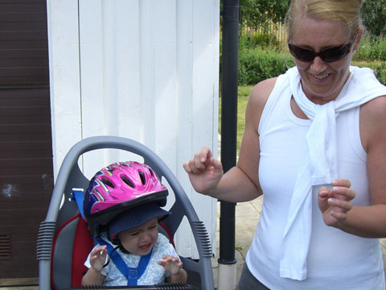

sweden
almhult
we took some time to stay with the lovely tammy and mahesh and new family addition poppy in almhult (the birthplace of ikea, no less!)

we were lucky enough to experience poppy's first bike ride and just look how much she is loving wearing a helmet. tammy you look so guilty!
they've brought this totally wicked place out in the country on a few acres of land. very wonderful place.

tammy took us for a few day trips including to see the old castle at kalmar.
sweden was our first taste of mainland europe's love of bikes. bikes, bikes and more bikes!
stockholm
we took the train up to stockholm. a classic city on the water.
ren got some swedish lessons. (note: we still have no idea what this actually means....)